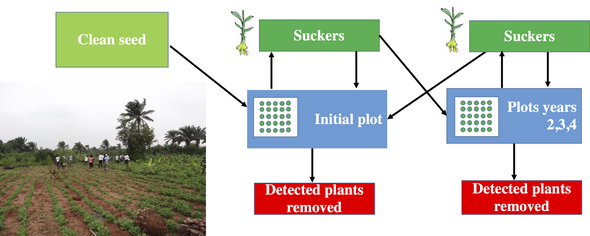
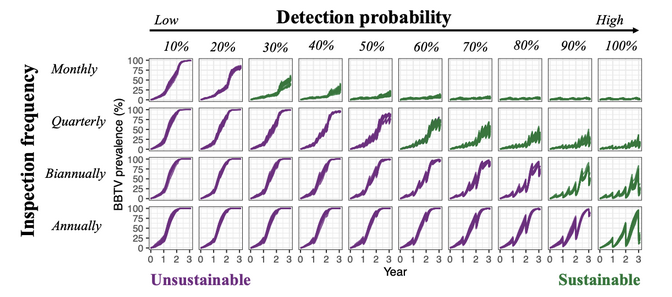

Banana Bunchy Top Disease (BBTD) Responsive
Location: Benin, Nigeria, Australia

Research focus: Potential of clean-seed programs for re-establishing banana production in disease endemic areas
Investigation of clean-seed program for re-establishing production in disease endemic areas
Despite the increasing use of the dissemination of disease-free planting material, it remains unclear how to optimise the potential of of clean-seed program for re-establishing production in disease endemic areas
Bananas are reintroduced by successively planting banana suckers in 0.5ha fields. Smallholder farmers have sourced clean seed material, which is 100% virus free, to start growing the initial field. All plants produce new suckers from the field are planted to replenish initial field or to expand production into new fields.

Sustainable strategy
Running generated simulations we can provide evidence that introducing virus-free material in areas affected by BBTV along with propagation of suckers combined with plant inspection for infection and removal of infected plants can provide a sustainable strategy for disease management.

Models were validated using field data from Omondi et al. 2020, Plant Pathology, 69, 1754.


The benefits
This model could be adapted to be used for other hosts and pathogens.
We are able to include additional management options (continuous provision of clean-seed, pesticide treatment) into the model which increases model robustness and accuracy for determining the benefits of introducing clean seed programmes under different farming systems.
Project members
- Dr Renata Retkute
- Professor Chris Gilligan
Partners
- University of Queensland, Brisbane, Australia
- CGIAR Bioversity International, Cotonou, Benin
- National Horticultural Research Institute (NIHOR), Nigeria
- Universitate Nationale d'Agriculture (UNA), Benin